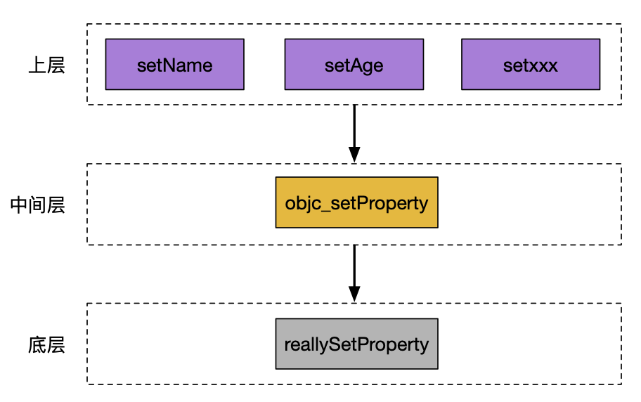
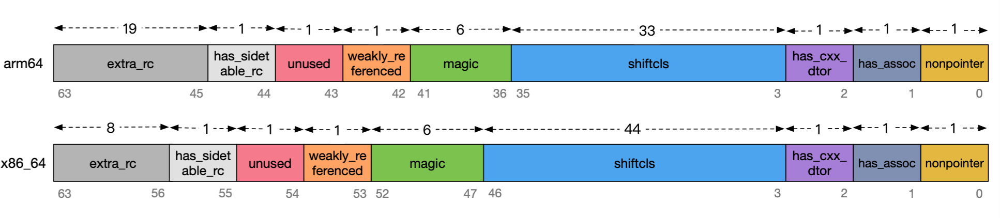
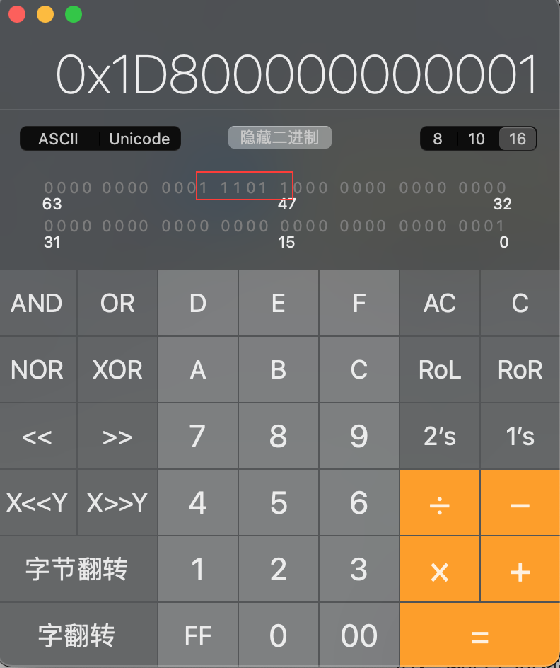

本篇使用的objc源码版本位818.2
1. clang介绍 Clang是一个由Apple主导的使用C++编写、基于LLVM、发布于LLVM BSD许可证下的C/C++/Objective-C/Objective-C++编译器。它与GNU C语言规范几乎完全兼容(当然，也有部分不兼容的内容， 包括编译命令选项也会有点差异)，并在此基础上增加了额外的语法特性，比如C函数重载 (通过__attribute__((overloadable))来修饰函数)，其目标(之一)就是超越GCC。
2013年4月,Clang已经全面支持C++11标准，并开始实现C++1y特性(也就是C++14，这是 C++的下一个小更新版本)。Clang将支持其普通lambda表达式、返回类型的简化处理以及更好的处理constexpr关键字。
1.1 clang的简单使用 我们通常想看代码的内部实现逻辑，通常会把源文件转换成cpp文件
1 clang -rewrite-objc main.m -o main.cpp
main.m 目标文件
main.cpp 转换后的文件
1.2 UIKit报错问题 当我们想转化带有UIKit相关的的东西时，上面的命令就会报错了。使用如下命令即可
clang -rewrite-objc -fobjc-arc -fobjc-runtime=ios-14.0.0 -isysroot /Applications/Xcode.app/Contents/Developer/Platforms/iPhoneSimulator.platform/Developer/SDKs/iPhoneSimulator14.3.sdk ViewController.m
如果还会报错，多数是因为iPhoneSimulator14.3.sdk没有找到，则通过xcode-contents找到对应的sdk即可。
1.3 xcrun xcode安装的时候顺带安装了xcrun命令，xcrun命令在clang的基础上进行了一些封装，要更好用一些。
2. 类 在main.m下创建一个Person类，然后通过上面的clang命令，找到我们需要的cpp文件。
1 2 3 4 5 6 7 @interface Person : NSObject // 添加一个属性，方便确认这就是我们要找的类 @property (nonatomic, copy) NSString *name; @end @implementation Person @end
转化之后，在cpp文件里，我们找到了如下的结构体。
2.1 类的声明 1 2 3 4 5 6 7 8 9 // @interface Person : NSObject。声明 struct Person_IMPL { struct NSObject_IMPL NSObject_IVARS; NSString *_name; }; struct NSObject_IMPL { Class isa; };
我们发现，一个对象，它本身就是一个结构体，内部有一个变量Class isa。
1 2 3 4 5 6 7 /// Represents an instance of a class. struct objc_object { Class _Nonnull isa OBJC_ISA_AVAILABILITY; }; /// A pointer to an instance of a class. typedef struct objc_object *id;
通过objc的源码，我们找到了objc_object的定义，其内部就是一个Class isa。与我们clang编译之后的NSObject_IMPL是一致的。所以NSObject_IVARS就是我们经常说的isa指针。
我们经常使用id类型来声明变量时不用带*，就是因为在底层已经做了处理。
2.2 类的实现 1 2 3 4 5 6 7 8 9 // @implementation Person static NSString * _I_Person_name(Person * self, SEL _cmd) { return (*(NSString **)((char *)self + OBJC_IVAR_$_Person$_name)); } extern "C" __declspec(dllimport) void objc_setProperty (id, SEL, long, id, bool, bool); static void _I_Person_setName_(Person * self, SEL _cmd, NSString *name) { objc_setProperty (self, _cmd, __OFFSETOFIVAR__(struct Person, _name), (id)name, 0, 1); } // @end
我们在上面的代码里，看到了两个方法
_I_Person_name：这是一个get方法，直接做了一个return操作。_I_Person_setName_：这是一个set方法，调用了objc_setProperty。
2.2.1 set方法 通过objc的源码，我们查找objc_setProperty方法。
1 2 3 4 5 6 void objc_setProperty(id self, SEL _cmd, ptrdiff_t offset, id newValue, BOOL atomic, signed char shouldCopy) { bool copy = (shouldCopy && shouldCopy != MUTABLE_COPY); bool mutableCopy = (shouldCopy == MUTABLE_COPY); reallySetProperty(self, _cmd, newValue, offset, atomic, copy, mutableCopy); }
内部判断是通过copy还是mutableCopy，然后调用reallySetProperty。
1 2 3 4 5 6 7 8 9 10 11 12 13 14 15 16 17 18 19 20 21 22 23 24 25 26 27 28 29 30 31 32 static inline void reallySetProperty(id self, SEL _cmd, id newValue, ptrdiff_t offset, bool atomic, bool copy, bool mutableCopy) { if (offset == 0) { object_setClass(self, newValue); return; } id oldValue; id *slot = (id*) ((char*)self + offset); if (copy) { newValue = [newValue copyWithZone:nil]; } else if (mutableCopy) { newValue = [newValue mutableCopyWithZone:nil]; } else { if (*slot == newValue) return; newValue = objc_retain(newValue); } if (!atomic) { oldValue = *slot; *slot = newValue; } else { spinlock_t& slotlock = PropertyLocks[slot]; slotlock.lock(); oldValue = *slot; *slot = newValue; slotlock.unlock(); } objc_release(oldValue); }
这里最主要的操作，就是对oldvalue进行release操作，新值进行retain操作。
这也是经常在面试时，经常会问的，声明一个@property内部有哪些操作的的答案：
自动创建带有_的变量。
自动实现set、get方法。

苹果的这种设计思路很值得我们学习。它提供了一个对外的接口供上层调用，其内部调用底层的方法。这样上层无论怎么变化，都不会影响底层接口及实现。
3. isa 我们应该还记得在【alloc、init、new】这一节中有callAlloc这个方法，这个方法有一步操作是进行对象关联。
1 2 3 4 5 6 7 8 9 10 obj->initInstanceIsa(cls, hasCxxDtor); inline void objc_object::initInstanceIsa(Class cls, bool hasCxxDtor) { ASSERT(!cls->instancesRequireRawIsa()); ASSERT(hasCxxDtor == cls->hasCxxDtor()); initIsa(cls, true, hasCxxDtor); }
接下来就看看这里是怎么搞的。对代码进行了简化，如果有需要请自行查看源码。
1 2 3 4 5 6 7 8 9 10 11 12 13 14 15 16 17 18 19 inline void objc_object::initIsa(Class cls, bool nonpointer, UNUSED_WITHOUT_INDEXED_ISA_AND_DTOR_BIT bool hasCxxDtor) { ASSERT(!isTaggedPointer()); // 这个是重点，创建一个isa_t，这个isa_t是啥呢？我们点进去看一下。 isa_t newisa(0); // 以下代码可以等先看我isa_t之后再回过头来看。 // 对bits内容赋默认值 newisa.bits = ISA_MAGIC_VALUE; // isa.magic is part of ISA_MAGIC_VALUE // isa.nonpointer is part of ISA_MAGIC_VALUE newisa.has_cxx_dtor = hasCxxDtor; // 这里是关联对象，就是本节的重点内容，我们进去看这个setClass是怎么实现的。 newisa.setClass(cls, this); newisa.extra_rc = 1; isa = newisa; }
这里我们先看下isa_t
1 2 3 4 5 6 7 8 9 10 11 12 13 14 15 16 17 18 union isa_t { isa_t() { } isa_t(uintptr_t value) : bits(value) { } uintptr_t bits; private: //这是个私有的，不会主动赋值，而是通过赋值别的变量(bits)时给的。 Class cls; public: #if defined(ISA_BITFIELD) struct { ISA_BITFIELD; // defined in isa.h }; #endif void setClass(Class cls, objc_object *obj); Class getClass(bool authenticated); Class getDecodedClass(bool authenticated); }
上面的代码做了精简处理，看起来会容易点，这个其实就是一个【联合位域】 。
如果我们需要声明一个car的类，定义4个属性，前后左右行驶。如果是int类型的数据，那就是需要4 * 4 = 16个字节的空间，也就是128位。但是如果使用联合位域的话，就可以极大的减少空间。只需要4位就可以了。
1 2 3 4 5 6 7 8 union car { struct { char forward; //1 char back; //1 char left; //1 char right; //1 } }
也就是0000，第一个0代表的是前，第二个0代表后，依次类推。
知道了联合位域的大概情况，我们就看一下这个ISA_BITFIELD是个什么东西。
1 2 3 4 5 6 7 8 9 10 11 12 13 14 15 16 define ISA_MASK 0x0000000ffffffff8ULL # define ISA_MAGIC_MASK 0x000003f000000001ULL # define ISA_MAGIC_VALUE 0x000001a000000001ULL # define ISA_HAS_CXX_DTOR_BIT 1 # define ISA_BITFIELD \ uintptr_t nonpointer : 1; \ uintptr_t has_assoc : 1; \ uintptr_t has_cxx_dtor : 1; \ uintptr_t shiftcls : 33; /*MACH_VM_MAX_ADDRESS 0x1000000000*/ \ uintptr_t magic : 6; \ uintptr_t weakly_referenced : 1; \ uintptr_t unused : 1; \ uintptr_t has_sidetable_rc : 1; \ uintptr_t extra_rc : 19 # define RC_ONE (1ULL<<45) # define RC_HALF (1ULL<<18)

注意：这个是ARM64下的存储，而使用（非M1芯片）电脑本地运行的的都是基于x86_64的，所以这里面的值存储的位置是有些变化的。
特别提一下shiftcls，在ARM64下是33位，在x86下是44位，导致magic开始的位置分别是36和47，这个位置一会有用到。
nonpointer:表示是否对 isa 指针开启指针优化 0:纯isa指针，1:不止是类对象地址,isa 中包含了类信息、对象的引用计数等，在iOS中，正常情况下生成的对象nonpointer都等于1。
has_assoc:关联对象标志位，0没有，1存在
has_cxx_dtor:该对象是否有 C++ 或者 Objc 的析构器,如果有析构函数,则需要做析构逻辑, 如果没有,则可以更快的释放对象。oc中的dealloc
shiftcls:存储类指针的值。开启指针优化的情况下，在 arm64 架构中有 33 位用来存储类指针。
magic:用于调试器判断当前对象是真的对象还是没有初始化的空
weakly_referenced:志对象是否被指向或者曾经指向一个 ARC 的弱变量，没有弱引用的对象可以更快释放。
unsed:不同版本的是deallocating，标志对象是否正在释放内存
has_sidetable_rc:当对象引用技术大于 10 时，则需要借用该变量存储进位
extra_rc:当表示该对象的引用计数值，实际上是引用计数值减 1， 例如，如果对象的引用计数为 10，那么 extra_rc 为 9。如果引用计数大于 10， 则需要使用到下面的 has_sidetable_rc。
我们了解了isa是啥东西了之后，在回过头看看是怎么进行管理对象的。了解上面的代码之后，我们继续看setCalss是怎么实现的。
1 2 3 4 5 6 // 对代码进行了简化， inline void isa_t::setClass(Class newCls, UNUSED_WITHOUT_PTRAUTH objc_object *obj) { shiftcls = (uintptr_t)newCls >> 3; }
是不是很不可思议，只是通过newCls向右偏移了3位。为啥偏移3位？
3.1 验证isa指针的关联过程 Person *p = [[Person alloc] init]; 运行objc源码工程。objc_object::initIsa
1 2 3 4 5 6 7 8 9 10 11 12 13 14 15 16 17 18 inline void objc_object::initIsa(Class cls, bool nonpointer, UNUSED_WITHOUT_INDEXED_ISA_AND_DTOR_BIT bool hasCxxDtor) { ASSERT(!isTaggedPointer()); // ① 创建newisa isa_t newisa(0); // ② 对bits内容赋默认值 newisa.bits = ISA_MAGIC_VALUE; // isa.magic is part of ISA_MAGIC_VALUE // isa.nonpointer is part of ISA_MAGIC_VALUE // ③ newisa.has_cxx_dtor = hasCxxDtor; // ④ 这里是关联对象，就是本节的重点内容，我们进去看这个setClass是怎么实现的。 newisa.setClass(cls, this); newisa.extra_rc = 1; isa = newisa; }
当断点走到②的时候。我们输出一些newisa的内容
1 2 3 4 5 6 7 8 9 10 11 12 13 14 15 16 (lldb) p newisa (isa_t) $1 = { bits = 0 cls = nil = { nonpointer = 0 has_assoc = 0 has_cxx_dtor = 0 shiftcls = 0 magic = 0 weakly_referenced = 0 unused = 0 has_sidetable_rc = 0 extra_rc = 0 } }
继续执行下一步，仍然输出newisa
1 2 3 4 5 6 7 8 9 10 11 12 13 14 15 16 (lldb) p newisa (isa_t) $5 = { bits = 8303511812964353 cls = 0x001d800000000001 = { nonpointer = 1 has_assoc = 0 has_cxx_dtor = 0 shiftcls = 0 magic = 59 weakly_referenced = 0 unused = 0 has_sidetable_rc = 0 extra_rc = 0 } }
发现有了变化，bits有初值了，cls也被赋值了，而且magic也被赋值了。这些都是默认值，我们上面说了isa的内部是64位的数据。我们把cls的值，放在二进制的计算器里，看看是什么内容。第一位1对应的是nonpointer=1

看这个图，第47位开始的6位数据是110111，这个二进制数是什么？正好是59。
之后，继续断点下一步。走到④。然后进到setClass方法内部，我们执行语句，看看cls偏移后的值。
1 2 3 4 (lldb) po (uintptr_t)newCls (uintptr_t) $15 = 4295000320 (lldb) po (uintptr_t)newCls >> 3 536875040
然后继续下一步，打印newisa
1 2 3 4 5 6 7 8 9 10 11 12 13 14 15 16 lldb) p newisa (isa_t) $11 = { bits = 8303516107964673 cls = Person = { nonpointer = 1 has_assoc = 0 has_cxx_dtor = 0 shiftcls = 536875040 magic = 59 weakly_referenced = 0 unused = 0 has_sidetable_rc = 0 extra_rc = 0 } }
嗯哼。。。。。是不是，就是这么牛。shiftcls是啥，存储类指针的值。也验证了我们上面说的，是从isa的内存里面第3位开始的。就这么简单。因为在内存里没有办法直接存储类名，所以通过存储数字替带。
我们继续执行，返回到_class_createInstanceFromZone这个函数里，object_getClass在来验证一下。
3.2 反向验证 ISA_MASK 我们通过object_getClass来反向验证isa指向。这里全部对代码进行了简化。如有需要请自行查看源码。
1 2 3 4 5 6 7 8 9 10 11 12 13 14 15 16 17 18 19 20 21 22 23 24 25 26 Class object_getClass(id obj) { if (obj) return obj->getIsa(); else return Nil; } inline Class objc_object::getIsa() { if (fastpath(!isTaggedPointer())) return ISA(); } inline Class objc_object::ISA(bool authenticated) { ASSERT(!isTaggedPointer()); return isa.getDecodedClass(authenticated); } inline Class isa_t::getClass(MAYBE_UNUSED_AUTHENTICATED_PARAM bool authenticated) { uintptr_t clsbits = bits; clsbits &= ISA_MASK; return (Class)clsbits; }
终于看到了结果了，最后就是通过bits & ISA_MASK来返回当前class的。还记得bits是啥吗？往上翻一下，bits是isa指针内部的第一个元素。所以我们按照这个&运算来验证一些，返回的数据是不是person
1 2 3 4 5 6 7 (lldb) x/4gx obj 0x10060d9b0: 0x011d800100008101 0x0000000000000000 0x10060d9c0: 0x0000000000000000 0x86c8f7c495bce30f // 拿第一位的地址进行&运算，注意这里是在mac上，所以使用x86下的ISA_MASK值 (lldb) po 0x011d800100008101 & 0x00007ffffffffff8ULL Person
以上就是isa的全部内容了。但是isa里面的这些东西是真的有用吗？肯定是有用的啊，我们从dealloc的函数实现去找到蛛丝马迹。
4.补充 dealloc 在objc源码中找到dealloc的方法。
1 2 3 4 5 6 7 8 9 10 11 - (void)dealloc { _objc_rootDealloc(self); } void _objc_rootDealloc(id obj) { ASSERT(obj); obj->rootDealloc(); }
好了，见证奇迹的时候到了。
1 2 3 4 5 6 7 8 9 10 11 12 13 14 15 16 17 18 19 20 21 22 inline void objc_object::rootDealloc() { if (isTaggedPointer()) return; // fixme necessary? if (fastpath(isa.nonpointer && !isa.weakly_referenced && !isa.has_assoc && #if ISA_HAS_CXX_DTOR_BIT !isa.has_cxx_dtor && #else !isa.getClass(false)->hasCxxDtor() && #endif !isa.has_sidetable_rc)) { assert(!sidetable_present()); free(this); } else { object_dispose((id)this); } }
上面objc_object::rootDealloc中对isa的各个属性的值来判断是执行free操作或者object_dispose。free函数就不用多说了，来看看dispose操作。
1 2 3 4 5 6 7 8 9 10 11 12 13 14 15 16 17 18 19 20 21 22 23 24 25 26 27 id object_dispose(id obj) { if (!obj) return nil; objc_destructInstance(obj); free(obj); return nil; } void *objc_destructInstance(id obj) { if (obj) { // Read all of the flags at once for performance. bool cxx = obj->hasCxxDtor(); bool assoc = obj->hasAssociatedObjects(); // This order is important. if (cxx) object_cxxDestruct(obj); if (assoc) _object_remove_assocations(obj, /*deallocating*/true); obj->clearDeallocating(); } return obj; }
这里就是整个的dealloc的流程。通过源码只是来加深对这些流程的印象。